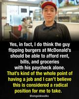

Bloomberg reports that YouTube is offering major creators millions of dollars to keep some content exclusive to its platform as Netflix increasingly signs YouTube-native talent to non-exclusive deals. YouTube has also warned that creators who simultaneously publish on Netflix could lose marketing support, event opportunities, and access to revenue from certain brand campaigns. Quartz reports: Bloomberg described two categories of payment: funding directed at specific programs, and a portion of the revenue YouTube brings in through large advertiser partnerships. No agreements have been finalized, but YouTube is close to deals with several partners, citing people familiar with the negotiations who declined to be identified. Creators who sign with Netflix face consequences. YouTube has warned creators that those who simultaneously publish videos on Netflix risk being sidelined from the platform's marketing campaigns and events, and would lose access to a share of proceeds from certain major brand deals.
Netflix has been signing YouTube creators to non-exclusive deals that allow them to post the same content on both platforms simultaneously. Creators including Alan Chikin Chow and Nick DiGiovanni have already signed such agreements, and Netflix remains in active conversations with dozens of other channels and programs, including the celebrity talk show Hot Ones. Netflix's pitch is straightforward: creators receive a substantial additional payday for content they have already produced, and their work reaches an audience that numbers more than 325 million subscribers.
YouTube Chief Executive Officer Neal Mohan had previously held that creators who work with competitors tend to drive viewers back to YouTube. But Bloomberg reported that Mohan and his team decided in recent weeks that the growing number of creators posting simultaneously on both platforms had become a problem that needed to be addressed. The concern is that when a video runs on both platforms simultaneously, YouTube's ability to convince advertisers of that video's exclusive value is undermined.
Read more of this story at Slashdot.
Japan is preparing a nonbinding "comply or explain" code that would urge generative AI companies, including foreign firms operating in Japan, to disclose what models they use, what training data they rely on, and how that data was collected. The proposal would also let rights holders ask whether specific webpages were included in training datasets. The Japan Times reports: The draft code comprises three principles. The first principle requires businesses to disclose the generative AI models they use, their training data and methods for collecting such data on their websites and make the information publicly accessible. Meanwhile, disclosure of sensitive information will not be mandatory. The second principle calls for businesses to disclose whether certain webpages are included in training data when requested by copyright holders and other rights holders who allege infringement. The third principle states that businesses will respond to requests for information from system and service users concerned about copyright infringement.
Read more of this story at Slashdot.
An anonymous reader quotes a report from NPR: Meta was infused with a culture in which employees obsessed over user numbers and consistently pushed safety to the side, according to Arturo Bejar, a former employee turned whistleblower, who testified today in the landmark child safety trial against the social media company. Only one man had the ability to change that, Bejar said: CEO Mark Zuckerberg. But he didn't. "At the end of the day, it was the company culture that Mark had created that made it so that it was practically impossible to deliver features that addressed the wellbeing and safety issues that we've been talking about," he said.
Bejar is a linchpin witness for a consortium of states led by California, Colorado, Kentucky and New Jersey that sued Meta, alleging violations of consumer and child data protection laws, and that the company lied to the public about risks its platforms posed. The attorneys for the states say Meta designed Facebook and Instagram to hook young users and to keep them on site longer thanks to features such as infinite scrolling and the "like" button. Meta has denied the allegations. In his opening statement on Tuesday, attorney Paul Schmidt argued that the company was sensitive to the risks to teens, sought to address them and did not deceive the public about them. The state attorneys have not yet said if they will call Zuckerberg as a witness.
Testifying in federal court in Oakland, California, for a second day on Wednesday, Bejar, who worked on safety issues at Meta for eight years, said he interacted with Zuckerberg dozens of times, and charged that Zuckerberg was not telling the truth when he made public denials that the company put profits over safety. In particular, Bejar addressed a widely-shared Facebook post Zuckerberg made in 2021 after another whistleblower, Frances Haugen, shared internal documents with The Wall Street Journal that highlighted risks to the mental health of teens. In the post, Zuckerberg said it's "just not true" that Meta prioritizes profit over safety and wellbeing. "Based on my experience at Meta, that is not an accurate statement," Bejar said. [...] Bejar testified, at almost every turn the company chose policies that boosted usership and revenue over safety. Safety was "not a meaningful priority," he said.
Read more of this story at Slashdot.
BrianFagioli writes: PINE64 has some very bad news for Linux hardware fans. PINE64 says it has no plans to produce additional Linux devices in the near future because of the ongoing DRAM and eMMC shortage. Future production will depend on component pricing after mid 2027, while existing PineNote and PineTab2 inventory could run out in roughly three months. The company says PineTime, PineVoice, and Pinecil production will continue as usual, but the outlook for its Linux hardware is much less certain. "That's it for this post, all in all it's a bit bleak for the Linux devices, but in the meantime PineStore still have a great lineup of MCU powered devices which will continue to expand with more exciting devices," the company said.
Read more of this story at Slashdot.
Independent music publisher Round Hill is suing Suno and Anthropic for allegedly using hundreds of copyrighted songs without permission to train their AI systems. The company says potential damages could exceed $1 billion, arguing there is "nothing fair" about building multibillion-dollar AI businesses on copyrighted material while rights holders receive nothing. From The Hollywood Reporter: Round Hill is a prominent music publisher whose copyrights include the Goo Goo Dolls' "Iris," Bonnie Tyler's "Total Eclipse of the Heart," the Kinks' "Lola" and Dio's "Holy Diver." The company provided a list of 500 songs that the defendants had infringed upon. Round Hill said in the suits that the company plans to "amend to list potentially ten thousand or more of their musical compositions," with those damages potentially exceeding $1 billion. "While in other cases for copyright infringement, Defendant has waxed poetic about the necessity of progress and AI's value to society, there is simply no reason -- other than rote expediency -- to have that progress come at the cost of copyrights holders," prominent music attorney Richard Busch, representing Round Hill, wrote in the suits.
Round Hill further argued that the latter "'expediency' arguments completely falter" when taking into account Suno and Anthropic's significant cash valuations they've earned while "exploiting illicit copies of copyrighted works, including the Round Hill Works." "There is simply nothing fair about a company using theft to build for purely commercial purposes a multi-billion dollar business while those from which they steal receive nothing," Round Hill said.
Suno also faces a lawsuit from Universal Music Group and Sony Music Group.
Read more of this story at Slashdot.
CISA says the Medusa ransomware operation has breached more than 500 U.S. critical infrastructure organizations since 2021, up from more than 300 reported last year. The group has targeted healthcare, government, defense, manufacturing, IT and financial organizations, evolving into a ransomware-as-a-service operation that recruits initial-access brokers and uses stolen data to pressure victims into paying. BleepingComputer reports: The three federal agencies recommended that network defenders secure their networks against the ransomware group's attacks by mitigating security vulnerabilities to protect operating systems, software, and firmware from exploitation attempts. Security teams are also advised to segment networks to block lateral movement after compromise and to block access from untrusted origins to remote services on internal systems.
[...] "Medusa developers typically recruit initial access brokers (IABs) in cybercriminal forums and marketplaces to obtain initial access to potential victims," the advisory says. "Potential payments between $100 USD and $1 million USD are offered to these affiliates with the opportunity to work exclusively for Medusa."
Read more of this story at Slashdot.
Moderna and Merck say their personalized mRNA melanoma vaccine significantly reduced both cancer recurrence and spread in a late-stage trial. The treatment could reach patients as soon as next year if regulators approve it. Reuters reports: Moderna developed the vaccine with Merck and tested it together with immunotherapy drug Keytruda, a widely used treatment for melanoma. [...] This is the first positive late-stage trial result for an mRNA cancer vaccine, which trains a patient's immune system to fight tumors by targeting specific mutations in those cells and the first such study to show that adding a treatment to Keytruda worked better than that therapy alone. Similar approaches are being tested against lung, breast and pancreatic cancers.
[...] The cancer treatment combines Merck's Keytruda with a made-to-order mRNA vaccine from Moderna that is based on an analysis of mutations found in the patients' own tumors. The trial enrolled 1,137 high-risk patients with stage IIB-IV melanoma that had been surgically removed. Volunteers were randomized to receive up to nine doses of Keytruda plus the personalized vaccine or Keytruda alone for about one year. The companies said no new safety signals have emerged in the trial. In January, the companies announced results of a mid-stage trial of the treatment showing that it reduced the risk of recurrence or death by 49% after five years. Karen Knudsen, CEO of the Parker Institute for Cancer Immunotherapy, said the Moderna results could signal a new era for treating solid-tumor cancers. "The positive hit here leads us into truly this next phase in immunotherapy," Knudsen said. "This is an auspicious start -- this is where things begin."
Moderna shares more than doubled on the news, adding about $30 billion to its market value.
Read more of this story at Slashdot.
An anonymous reader quotes a report from 404 Media: X's algorithm learns what you hate and shows you more of it, according to a new study just published in the Proceedings of the National Academy of Sciences (PNAS). The paper, titled Value misalignment of X's feed algorithm is a reflection of value tensions in engagement, found that the site's algorithm prioritized engagement above all else when it generated a user's For You Page. It also showed that X serves more ragebait to people who say they are Democrats, although the exact reason for that is unclear. "In 2026 that's maybe not the most surprising headline ever," Ziv Epstein, a postdoctoral researcher at Stanford University, and co-author of the paper, told 404 Media. "So we actually dug in a little deeper to figure out why this is actually happening, and it turns out that X's feed algorithm, like a lot of these social media algorithms, is optimized for engagement [but] it turns out that not all types of engagement are considered equally."
The researchers found that X's algorithm can push users toward content that conflicts with their stated values, especially when they reply to posts that anger or provoke them. Although replies accounted for just 6.8% of interactions, they appeared to carry disproportionate weight: "It's this feedback loop of outrage baiting. The algorithm learns that you get outraged and then continues to serve more content in that direction," said Epstein.
It's unclear why X seems to serve ragebait to Democrats more often than Republicans. 404 Media speculates that it may be because there's more rightwing content on X overall or that Democrats tend to engage with posts they disagree with more often. "There might be some kind of differential effects on information diets there, or it might be something more psychological about how different you know partisan identities are triggering different kinds of actions and reactions, but ultimately I don't want to speculate too much," said Epstein.
X's former product chief Nikita Bier confirmed that the site had been set to favor replies. "This is no longer true," Bier said in a post on X. "The largest contributor of seeing ragebait was the reply predictor and we were aware that angry replies were causing people to see more of that content. So last month, we gave the reply predictor a 15x boost if it's a friend's post -- and it reduced ragebait by [an] order of magnitude."
Read more of this story at Slashdot.
A U.S. Army battalion at Fort Stewart is offering soldiers a four-day pass timed to the release of Grand Theft Auto VI if they reenlist for at least two years. The program is limited to one unit for now, but it fits the Army's broader effort to appeal to gamers as a recruiting and retention pool. CBS News reports: Twenty soldiers at Fort Stewart in Georgia in the Army's 9th Brigade Engineering Battalion, part of the 3rd Infantry Division, have already chosen this incentive as part of their reenlistment, an Army spokesperson told CBS News on Wednesday. "The idea was to have a unique incentives program that connects to what Soldiers are interested in," Lt. Col. Angel Tomko, a spokesperson for the 3rd Infantry Division, said in a statement. "The command team, in conjunction with the career counselor, wanted to get soldiers excited to reenlist."
[...] The Army memo, which has circulated online, says any soldier who signs a reenlistment contract between Aug. 1, 2026 and Nov. 14 will be authorized for a special four-day pass designated to coincide with "the highly anticipated release of the video game Grand Theft Auto VI (GTA 6)." About 130 soldiers are currently eligible for the incentive, Tomko said. Eligible soldiers must reenlist for a minimum of two years and up to six years.
Read more of this story at Slashdot.
Security researcher Jeremiah Fowler found that people-search service ClarityCheck left more than 9 million image files accessible in an unsecured Amazon S3 bucket, despite advertising its reverse-image search as "private and secure." A separate misconfiguration also exposed email addresses, phone numbers, and other personal information. Wired reports: Overall, according to findings from independent security researcher Jeremiah Fowler, the exposed ClarityCheck database contained roughly 450 GB of images, including what appeared to be profile images, screenshots, and other photographs of adults, teenagers, and children. All of the images were stored in an unsecured Amazon S3 bucket, with files in folders named "faces" and "profiles," which could be accessed by anyone online through a URL included in the company's publicly available website code.
ClarityCheck is one of a number of so-called people-finder tools that have appeared online in recent years. These websites broadly claim to be able to search the web, public records, and other databases to identify individuals. ClarityCheck's website says it can run searches on phone numbers, email addresses, vehicle identification numbers, and names. Its photo-search page says it can help "identify anyone in a photo" and find social media profiles "in seconds." While ClarityCheck secured the giant image database after WIRED contacted the company in July, Fowler warns that it was seemingly exposed for months, and his initial efforts to flag the problem to the company were unsuccessful. Accidental data exposures create risk for any personal information, but particularly for sensitive and unchangeable biometric data like face images.
[...] In addition to the face data, ClarityCheck had also misconfigured its APIs such that its website URLs could be manipulated to reveal data about people simply by entering names; anyone using any consumer browser could have done this. Entering a name into one of the URLs would return multiple potential email addresses, physical addresses, and phone numbers for people with that name. After WIRED contacted the company, the URLs were secured. The ClarityCheck spokesperson said in the statement that the details displayed were "sourced from publicly available information and licensed third-party data providers." A spokesperson for ClarityCheck said in a statement: "Once this was drawn to the attention of the appropriate teams, we acted immediately to restrict access." The company disputed any characterization that the data was "exposed," saying that an "ordinary member of the public" would not have come across it.
"We do not accept that data in the temporary storage location was 'publicly exposed,' which implies large-scale public access," the spokesperson says. "Access required knowledge of a specific, unindexed URL that was not discoverable through ordinary use of the ClarityCheck service or a general web search."
Read more of this story at Slashdot.
An anonymous reader quotes a report from Ars Technica: The Federal Communications Commission last week eliminated the gigabit speed goal established during the Biden administration and declared that current levels of broadband deployment in the US are acceptable. Though fiber networks have routinely offered such speeds for years, the FCC said the gigabit speed goal is not "technologically neutral," suggesting that it isn't fair to other, slower technologies.
In 2024, the FCC raised its broadband benchmark to 100Mbps downstream and 20Mbps upstream, setting the new standard by which to judge whether deployment is reasonable and timely. The FCC at the time also set a long-term speed goal of 1Gbps download speeds paired with 500Mbps upload speeds, saying it would use the goal "as a guidepost for evaluating our efforts to encourage deployment." Republican Brendan Carr, who is now the FCC chairman, never liked that long-term goal. He proposed abolishing it last year, and the change was finalized on August 14 in the FCC's latest broadband deployment report. The reports are mandated by Section 706 of the Telecommunications Act.
"As part of our return to following the plain language of Section 706, we adopt our proposal from the Notice [of Inquiry] to abolish without replacement the long-term goal of 1,000/500 Mbps established in the 2024 Report," the order said. "A long-term goal is not mentioned in Section 706 and could appear to violate our obligation to conduct our analysis in a technologically neutral manner. At present, it is impossible to predict long-term technological developments and the evolution of consumer preferences." The FCC said that comments submitted by cable industry group NCTA and wireless industry group CTIA "support our reasoning for abolishing the long-term goal." Last year, the Brendan Carr-led FCC said (PDF) that the gigabit goal "may be unreasonably prejudicial to technologies such as satellite and fixed wireless that presently do not support such speeds." However, last week's report contradicts that stance.
"We disagree with commenters arguing that our concern about technological neutrality merely serves to accommodate technologies that may currently offer slower speeds," the FCC said. "At present, we do not know the nature of future consumer preferences and, considering that the goal is not required by the statute and does not serve any positive purpose (as discussed herein), we believe it prudent to abolish it."
Read more of this story at Slashdot.
bryanandaimee shares a report from ScienceDaily: A Finnish study has found an unexpected association between screen use and cognitive performance. Children who accumulated more screen time as they grew up tended to show better cognitive processing during adolescence. One of the researchers cautions against viewing screen time as entirely harmful and says the goal should be to balance physical activity with screen use that encourages active thinking. [...] "The findings suggest that screen time can support children's and adolescents' cognitive processing. Presumably, the essential point here is what kind of things they do in their screen time. Teachers and parents should encourage children to use devices and screens in such ways that promote active thinking, problem-solving, creativity and learning," states Doctoral Researcher Petri Jalanko from the University of Jyvaskyla.
Digital activities that involve learning, creativity, problem-solving, or other forms of active mental engagement could potentially help explain the association observed in the study. "We should not regard screen time solely as harmful but seek balance between physical activity and screen time that promotes active thinking," Jalanko summarizes. The relationship between physical activity and cognition was more complicated. Among girls, greater amounts of light intensity physical activity since childhood were associated with better working memory during adolescence. Among boys, greater participation in guided physical activity from childhood through adolescence was linked to better working memory.
The researchers also found an unexpected pattern involving unsupervised exercise. Lower levels of self-reported unsupervised physical activity were associated with better cognitive processing in adolescence. By contrast, physical activity and sedentary time measured using a device that tracked heart rate and movement were not associated with cognitive processing. One possible explanation is that these sensors can measure movement and physiological activity but cannot determine exactly what a person is doing during periods of activity or inactivity. The findings have been published in the journal Pediatric Exercise Science.
Read more of this story at Slashdot.
Stripe is acquiring AI model marketplace OpenRouter as it pushes beyond payments into the infrastructure behind AI applications. According to The New York Times, the deal is reportedly valued at about $7.5 billion, with $1.5 billion allocated to OpenRouter's founders. Less than three months ago the company was valued at about $1.3 billion. CNBC reports: OpenRouter has become popular with developers seeking to use AI models, particularly those considered non-proprietary and available for free. Many of these so-called open-weight AI models stem from Chinese labs like DeepSeek and Z.ai, which have gained steam among developers for generally being more cost-efficient relative to proprietary AI models from U.S. companies like OpenAI and Anthropic.
In a blog post about the deal, Stripe noted that it's been working with companies to "optimize their token costs and route tokens efficiently," referring to a kind of metric used to measure AI model usage. Stripe said it's difficult to manage AI costs relative to performance because of the rapid "pace at which models are released and repriced." [...]
OpenRouter said in a blog post that combining with Stripe will help with its overall vision of "a healthy AI ecosystem where many models thrive, where AI neurodiversity is a strength, where a lab or an inference provider with a breakthrough can reach millions of developers, and where no single model becomes the default by inertia." "Stripe is building the economic infrastructure for AI, and together with OpenRouter we'll help businesses maximize profitability by routing their requests intelligently and spending their tokens efficiently," Stripe CEO Patrick Collison said in a statement.
Read more of this story at Slashdot.
Amazon says its Prime Air drone delivery service will expand sixfold to nearly 500 U.S. cities and towns by the end of 2026, including metro areas around Chicago, Syracuse, Cleveland, Atlanta, and Boise. According to Amazon Prime Air vice president David Carbon, the service has already delivered "hundreds of thousands of packages to customers" this year, typically within about an hour. The Verge reports: These will join 11 locations across the US where Amazon already offers drone deliveries, with each Prime Air site serving an area of approximately 175 square miles. The service aims to quickly deliver packages of up to 5 pounds or less [...]. Amazon reiterated its drone safety features alongside these expansion plans, including Prime Air's "industry-leading Detect-and-Avoid system." That's likely an attempt to minimize any concerns raised by the communities where the service is expanding, given these drones have already been scrutinized for crashing into cranes, internet cables, gardens, and an apartment building.
Read more of this story at Slashdot.
NASA has called off a $30 million mission to rescue its aging Swift space telescope after Katalyst Space's Link spacecraft developed persistent control and positioning problems. The Associated Press reports: Katalyst said Link will not attempt to capture Swift and boost it to a higher orbit because of problems with controlling the spacecraft. NASA said this means the telescope will plunge through the atmosphere after more than 20 years of tracking some of the biggest explosions in the universe like gamma ray bursts and exploding stars. Its demise is not expected before October.
NASA paid $30 million to Katalyst in an attempt to raise the telescope to a safer, longer-lasting orbit. Intense solar activity caused it to lose altitude faster than expected. The rescue spacecraft went into an uncontrollable spin a few weeks after its liftoff in early July. While flight controllers managed to slow Link's tumble, issues continued to plague its pointing and positioning in orbit.
"This is not the outcome we were working toward, but it does not change why this mission was worth attempting," NASA Administrator Jared Isaacman said in a statement. As a consolation prize, Katalyst will continue to operate Link in proximity with the telescope to demonstrate capabilities for future rescue operations. Katalyst CEO Ghonhee Lee said it was an ambitious mission on an aggressive timeline that was thrown together in under a year. "We took on this high-risk, high-reward challenge and are proud of the milestones we reached along the way," Lee said in a statement. "We have already learned a tremendous amount."
Read more of this story at Slashdot.
Bloomberg : Sources: Anthropic expects to match or beat the size of SpaceX's record-setting IPO, as it prepares to file publicly for its IPO as soon as the end of August — Anthropic PBC expects to match or beat the size of SpaceX's record-setting initial public offering, according to people familiar with the matter …
Rachel Metz / Bloomberg : Source: Anthropic plans a safety system this year requiring enterprises to retain data for 30 days, with an option to do so on their own cloud infrastructure — Anthropic PBC plans to allow business customers to keep greater control of their data when using its most capable artificial intelligence models …
Google : Google DeepMind says its Gemma family of open models has surpassed 1B downloads and developers have published 100K+ Gemma model variants over the past two years — From outer space to underwater, here's how developers are bringing a positive impact with our open models.
Qianer Liu / The Information : Sources: Nvidia plans to begin small-batch shipments of an LPU tailored for Chinese customers by the end of 2026; the chip complies with US export control rules — Nvidia plans to begin small-batch shipments of an AI chip specially tailored for Chinese customers by the end of the year …
Dean Takahashi / GamesBeat : Astromech, which uses genomic data to build predictive AI models of biological change, raised $20M at a $3.8B valuation, bringing its total funding to $60M — Become a member of GB MAX to gain exclusive access to the industry and to the most influential global B2B leadership community …
Ram Iyer / TechCrunch : Ramp launches Router, an AI model routing service it has been using internally over the past three years, in the US; Router is free to use for the rest of 2026 — Corporate expense management platform Ramp is hot on the heels of Stripe in setting up toll houses for AI inference.
Olivia Carville / Bloomberg : Two US senators demand answers from TikTok about a “depraved” test that withheld a safety feature from 10% of US users, including a teenager who died by suicide — Two US senators have sent a letter to TikTok executives demanding answers about an experiment the company ran …
Reuters : The Chinese city of Hangzhou deploys traffic-control robots that operate autonomously, using cameras and radar to signal traffic and flag violations — It is not quite the “RoboCop” of the 1987 movie: no gun, no power to arrest and wheels rather than the Hollywood cyborg's mechanical stride.
Iain Martin / Forbes : Filing: in 2025, TikTok generated $702.5M in net profit in Europe, Africa, and Latin America, its first annual profit, on $9.1B in revenue, up 45.7% YoY — TikTok's operations in Europe, Africa and Latin America saw revenues jump 45.7% to $9.1 billion and turn its first profit …
Alexander Gladstone / Wall Street Journal : A bankruptcy court delays Google's $10M purchase of Spirit Airlines' data after former flight attendants objected, seeking assurance their info would be removed — The flight attendants want assurance that their confidential information will be removed from the sale of the defunct airline's digital records
Edward Ludlow / Bloomberg : Waymo says it has built an ASIC chip that will improve its robotaxis' reflexes and navigational skills and help it diversify away from third parties like Nvidia — Alphabet Inc.'s Waymo has built a custom chip that the company said will improve the performance of its robotaxis …
Vlad Savov / Bloomberg : Circana: US video game hardware spending fell 29% YoY in July to $282M, the lowest since COVID, shipments fell 39% YoY, and console prices grew 16% YoY to $542 — Nintendo Co.'s Switch 2 sales in the US this July were less than half what they were the same month a year ago …
Julia Hornstein / The Information : Anthropic-backed enterprise AI venture Ode acquires four-year-old AI consultancy Casper Studios for an unknown amount; Ode employs 100+ after buying Fractional — A joint venture established by Anthropic and Wall Street firms such as Blackstone has made its first acquisition since its July launch …
Douglas Gillison / Reuters : Study: 150+ Polymarket wallets may have traded on internal US military information, making $8M overall with a 97.2% average win rate and attracting copycat bets — More than 150 wallets on Polymarket International may have traded on inside U.S. military information, attracting copycat bets …
Robert Purchese / Eurogamer.net : GTA 6 leaker CyberLeek releases more footage, including a video of a character spelling “leek” with bullet holes in a wall, suggesting direct access to the game — A real plane. — Follow Grand Theft Auto VI — UPDATE 1PM BST: A previous version of this article erroneously suggested …